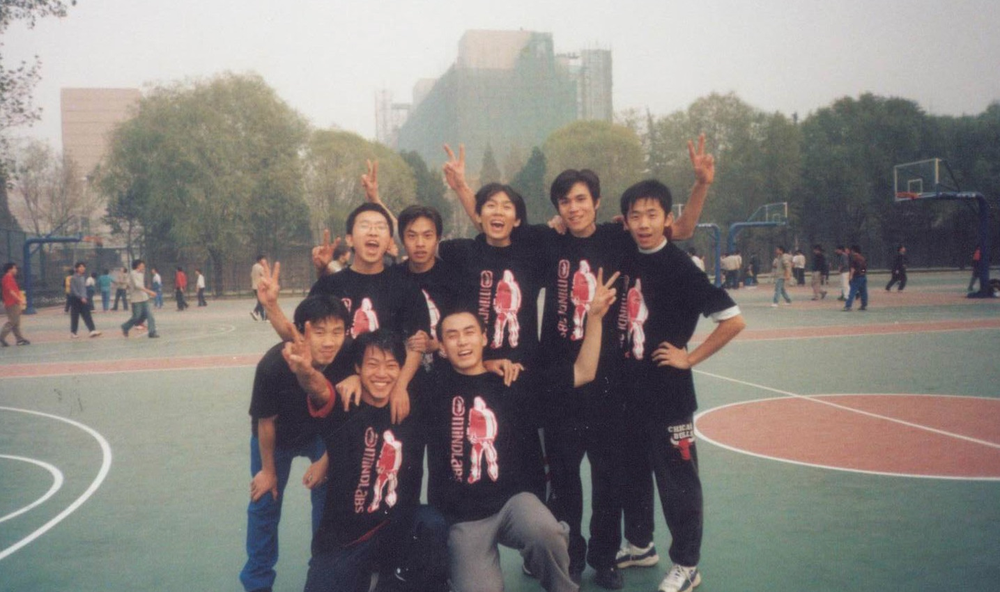

序言#
AI 时代的来临，根本没有给人们多少反应的时间。很多人还没搞清楚状况，就发现原本的生活和工作方式已经被彻底颠覆。而且不仅来得极快，影响范围也极广——小到设计师、投资经理、动画制作、美术创作、文学写作、客服、软件工程师，大到软件公司、咨询公司、电影公司、设计工作室，几乎无一幸免。
很多人都在问同一个问题：
我的工作，什么时候会被 AI 取代？
恐慌、焦虑，已有人成为第一批因 AI 而失业的人。我的同事里也有很多人问过我这个问题。几个月前，我无法回答，只能诚实地说：”我也不知道。”
但最近半年，当我跳出舒适圈，用空杯心态去学习那些全新的知识——跟小我十几岁的年轻人一起从零接触新概念、新工具、新技术，从零积累新经验——我深刻体会了一句听过很多次、却从未如此真实感受过的话：
The oldest and strongest emotion of mankind is fear, and the oldest and strongest kind of fear is fear of the unknown.
人类最古老、最强烈的情感是恐惧，而最古老、最强烈的恐惧，是对未知的恐惧。
我年轻时打篮球。每逢重要比赛、对手很强，上场前总会极度紧张。记得 2001 年大二那年，院系篮球赛的第二个对手就是当年最强的”计98”队——计算机系 98 届，高手云集，整体性和战术素养极高，还是卫冕冠军。我们一群愣头青，全是野球打法，没有经过任何正规训练。
比赛前的最后一节课是《概率论与数理统计》。老师知道我们有球赛，特意提前几分钟下课，让球队的人先赶回宿舍换衣服。他说：”不是我克扣你们上课时间，主要是我也想去看你们打比赛。”当时听了大家都笑，现在回想，觉得很珍贵。
热身时，看到对面一个个人高马大、球技娴熟的学长，球场边已围满了来看他们赢球的观众，那种压迫感扑面而来。受《灌篮高手》影响，开赛前班里女同学给我们几个人手心都写了一个”拼”字，齐声为我们加油。
直到开赛哨声响起前一刻，我紧张得手心全是汗。但很神奇的是，比赛一开始，我就什么都感觉不到了——感觉不到周围的加油声，感觉不到手心的汗，感觉不到紧张。整个人精神高度集中，全在比赛上。
我记不清那 40 分钟里具体做了什么，很多细节已经模糊。但我记得非常清楚的是：当我全神贯注地投入比赛，所有的未知都在与对手的碰撞中慢慢化解。我能从他们手里断下传球，能从人丛中穿越而过，能跳起来从他们头上抢下篮板，也能摆脱防守投篮得分。那场比赛我投进了 4 个三分，我们赢了 5 分。
{kind=link}

Fig. 1 2001 年，赢球后的合影。那件黑色球衣，穿了整整四年。#
我想起这件事，是因为最近半年当我跳出舒适区、放下十几年所谓的”工作经验”、放下对未知的恐惧去学新东西的时候，那种开赛哨声响起的感觉又回来了。
以前没系统学过 AI，没做过 NLP 大项目，没搞过算法——没关系。不熟悉就去学，不懂就去问。现在有 AI 当老师，随时可以请教。搞算法有什么了不起，核心不都是数学吗？重新拿起高等数学、线性代数、数理统计的课本，很快就能找回感觉。这几门”老三样”，我考研考了 140 分，谁怕谁？
事实是：你手心冒汗，你极度恐惧，都没关系。当你开始全力以赴、直面恐惧的时候，你会发现对手也没那么可怕——死磕下去，说不定还能赢。
过去半年，尤其是最近三个月，AI 行业的发展速度令人目不暇接。感觉每天 24 小时不停地学也追不上行业的脚步——工具太多，技术太多，实战分享太多，看都看不过来。
后来我发现：学来学去，都是别人的经验。看一百遍，不如自己动手一次。
当我再次扎进去，自己动手去做，感觉就慢慢回来了。
于是我花了几个月时间，从头到尾实践了一遍面向大模型的编程技术。读了大量原版书籍，做了一堆凌乱的笔记。最近总算下了狠心把这些笔记整理了一遍——不然过段时间这些东西就要被我自己扔掉了。
这套资料，是我整理给自己查阅的，也分享给需要的人。
我很不明白，为什么有人每天花好几个小时刷短视频、看短剧、刷社交媒体，同时还在焦虑会不会因 AI 而失业。缓解焦虑的方式，不能是只给人短暂麻痹的”奶头乐”。
当然，如果你能用 AI 做出让别人当”奶头乐”的东西来给自己赚钱——那也挺好。